전기공사기사 (2010-05-10 기출문제)
1과목: 전기응용 및 공사재료
1. 특수형광 물질과 유전체를 혼합한 형광체에 교류 전압을 가하여 발광시킨 면광원 램프는?
- 나트륨 램프
- EL 램프
- 제논 램프
- 형광 램프
(정답률: 68%)

2. 200[W]는 약 몇 [cal/s]인가?
- 4.8[cal/s]
- 48[cal/s]
- 480[cal/s]
- 4800[cal/s]
(정답률: 74%)
3. 다음 중 회전운동에서 관성 모멘트의 단위는?
- [rad/s]
- [J]
- [kg·m2]
- [N·m]
(정답률: 74%)
4. down-light의 일종으로 아래로 조사되는 구멍을 작게 하거나 렌즈를 달아 복도에 집중 조사되도록 한 조명은?
- Pin hole light
- coffer light
- line light
- cornis light
(정답률: 89%)
5. 다음 중 다이액(DIAC)의 설명으로 틀린 것은?
- 단일 방향성 소자
- 2극 다이오드의 교류 스위치
- 브레이크 오버 전압을 가지고 있다.
- TRIAC의 제어 소자
(정답률: 75%)
6. 공기 건전기(A)와 망간 전지(B)의 특성을 비교 설명 한 것 중 틀린 것은?
- (A)는 (B)보다 자체방전이 적다.
- 똑같은 크기의 두 건전지를 비교하면 (A)가 가볍다.
- 방전하는 용량은 (A)가 (B)보다 크다.
- 처음의 전압은 (A)가 (B)보다 약간 높다.
(정답률: 66%)
7. 출력 7200[W], 800[rpm]으로 회전하고 있는 전동기의 토크는 약 얼마인가? (단, 효율은 90[%]로 한다.)
- 86[kg·m]
- 8.77[kg·m]
- 0.14[kg·m]
- 115[kg·m]
(정답률: 82%)
8. 바리스터(Varistor)의 용도는?
- 전압증폭
- 정전압
- 과도 전압에 대한 회로보호
- 전류특성을 갖는 4단자 반도체 장치에 사용
(정답률: 86%)
9. 열차의 자중이 100[t]이고, 동륜상의 중량이 90[t]인 기관차의 최대 견인력은? (단, 레일의 점착계수는 0.2로 한다.)
- 15000[kg]
- 16000[kg]
- 18000[kg]
- 21000[kg]
(정답률: 87%)
10. 다음 용접방법 중 저항 용접이 아닌 것은?
- 점용접
- 돌기용접
- 이음매용접
- 전자빔용접
(정답률: 89%)
11. 네온전선을 조영재에 지지하기 위해 주로 하는 애자는?
- 코드 서포트
- 노브 서포트
- 쥬브 서포트
- 특캡 애자
(정답률: 60%)
12. 케이블의 종류 중 연피가 없는 케이블은?
- 폴리에틸렌 외장 케이블
- 클로로플렌 외장 케이블
- 캡타이어 케이블
- MI 케이블
(정답률: 79%)
13. 다음 중 케이블트레이의 종류에 해당되지 않는 것은?(관련 규정 개정전 문제로 여기서는 기존 정답인 3번을 누르면 정답 처리됩니다. 자세한 내용은 해설을 참고하세요.)
- 사다리형 케이블트레이
- 통풍 채널형 케이블트레이
- 밀폐형 케이블트레이
- 바닥 통풍형 케이블트레이
(정답률: 66%)
14. 가공 배전선로 및 인입선에서 인류애자를 설치하기 위해 사용하는 금구류는?
- 볼아이
- 소켓아이
- 인류스트랍
- 볼쇄쿨
(정답률: 77%)
15. 접지저항 저감제용 체류제로 사용되는 재료는?
- 소석회
- 규산소다
- 탄산소다
- 적토
(정답률: 68%)
16. 옥내용 소형 스위치 중 텀블러스위치의 정격전류가 아닌 것은?
- 5[A]
- 10[A]
- 15[A]
- 20[A]
(정답률: 65%)
17. 점유 면적이 좁고, 운전·보수가 안전하여 공장 및 빌딩 등의 전기설에 많이 사용되는 배전반은?
- 데드 프런트형
- 수직형
- 큐비클형
- 라이브 프런트형
(정답률: 86%)
18. 등기구 용량 앞에 특별히 표시할 경우에는 각각의 기호를 표시한다.다음 중 등기구 종류별 기호가 옳은 것은?
- 형광등 : F
- 수은등 : N
- 나트륨등 : T
- 메탈 핼라이드등 : H
(정답률: 89%)
19. 전기기기는 사용 중에 온도가 상승하는데 그 원인이 되지 않는 것은?
- 줄열
- 유전손
- 누설전류
- 풍손
(정답률: 70%)
20. 콘크리트 매입 금속관 공사에 이용하는 금속관의 두께는 최소 몇 [mm] 이상이어야 하는가?
- 1.0[mm]
- 1.2[mm]
- 1.5[mm]
- 2.0[mm]
(정답률: 74%)
2과목: 전력공학
21. 발열량 10000kcal/kg의 벙커C유를 1시간에 75ton 사용하여 300MW를 발전하는 화력발전소의 열효율은?
- 31.6[%]
- 34.4[%]
- 36.2[%]
- 38.0[%]
(정답률: 15%)
22. 저항 접지방식 중 고저항 접지방식에 사용하는 저항은?
- 30~50[Ω]
- 50~100[Ω]
- 100~1000[Ω]
- 1000[Ω] 이상
(정답률: 15%)
23. 3상3선식 가공 송전선로의 선간거리가 각각 D12, D23, D31일 때, 등가선간거리를 구하는 식은?
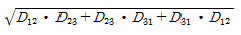
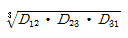
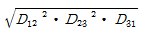
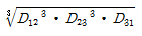
(정답률: 21%)
24. 전력 조류계산을 하는 목적으로 거리가 먼 것은?
- 계통의 신뢰도 평가
- 계통의 확충계획 입안
- 계통의 운용 계획수립
- 계통의 사고예방제어
(정답률: 15%)
25. 비접지식 송전로에 있어서 1선 지락고장이 생겼을 경우 지락점에 흐르는 전류는?
- 직류
- 고장상의 영상전압보다 90도 늦은 전류
- 고장상의 영상전압보다 90도 빠른 전류
- 고장상의 영상전압과 동상의 전류
(정답률: 17%)
26. 원자로의 감속재와 관련하여 거리가 먼 것은?
- 경수
- 감속 능력이 클 것
- 원자 질량이 클 것
- 고속 중성자를 열 중성자로 바꾸는 작용
(정답률: 17%)
27. 송전선 현수 애자련의 연면 섬락과 가장 관계가 먼 것은?
- 현수 애자련의 개수
- 현수 애자련의 소손
- 분로리액터
- 철탑 접지 저항
(정답률: 15%)
28. 66kV, 3상 1회선 송전선로의 1선의 리액턴스가 26Ω, 전류가 300A일 때, % 리액턴스는?
- 약 17.3[%]
- 약 20.5[%]
- 약 34.6[%]
- 약 49.0[%]
(정답률: 12%)
29. 유황 곡선으로부터 알 수 없는 것은?
- 월별 하천 유량
- 하천의 유량 변동 상태
- 연간 총유출량
- 평수량
(정답률: 14%)
30. 송전단 전압 66kV, 수전단 전압 61kV인 송전선에서 수전단의 부하를 끊은 경우, 수전단 전압이 63kV라 하면 전압 강하율은?
- 3.3[%]
- 4.8[%]
- 7.9[%]
- 8.2[%]
(정답률: 10%)
31. 파동임피던스가 500인 가공송전선 1km당의 인덕턴스 L과 정전용량 C는?
- L=1.67[mH/km], C=0.0067[㎌/km]
- L=2.12[mH/km], C=0.067[㎌/km]
- L=1.67[mH/km], C=0.167[㎌/km]
- L=2.12[mH/km], C=0.167[㎌/km]
(정답률: 12%)
32. 전력 퓨즈(Power fuse)는 고압, 특고압기기의 주로 어떤 전류의 차단을 목적으로 설치하는가?
- 충전 전류
- 부하 전류
- 단락 전류
- 영상 전류
(정답률: 18%)
33. 그림과 같은 계통을 노드 어드미턴TM 행렬로 나타낼 때 모선 ②의 구동점 어드미턴스 Y22 및 모선 ①과 ②간의 전달 어드미턴스 Y12는?
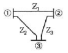
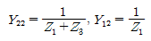
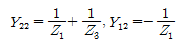
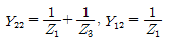
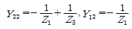
(정답률: 12%)
34. 피뢰기에서 속류를 끊을 수 있는 최고의 교류 전압은?
- 정격전압
- 제한전압
- 차단전압
- 발전개시전압
(정답률: 13%)
35. 송전전력, 부하역률, 송전거리, 전력손실, 선간전압을 동일하게 하였을 때 3상3선식에 의한 소요 전선량은 단상 2선식인 경우의 몇 [%]인가?
- 50[%]
- 67[%]
- 75[%]
- 87[%]
(정답률: 16%)
36. 피뢰기가 구비하여야 할 조건으로 거리가 먼 것은?
- 충격방전 개시전압이 낮을 것
- 상용주파 방전개시전압이 낮을 것
- 제한 전압이 낮을 것
- 속류의 차단능력이 클 것
(정답률: 17%)
37. 그림과 같이 “수류가 고체에 둘러싸여 있고 A로부터 유입되는 수량과 B로부터 유출되는 수량이 같다”고하는 이론은?
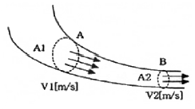
- 베루누이의 정리
- 연속의 원리
- 토리첼리의 정리
- 수두이론
(정답률: 15%)
38. 고장전류와 같은 대전류를 차단할 수 있는 것은?
- 단로기
- 선로개폐기
- 유입개폐기
- 차단기
(정답률: 18%)
39. 발전기 또는 주변압기의 내부고장 보호용으로 가장 널리 쓰이는 것은?
- 과전류계전기
- 비율차동계전기
- 방향단락계전기
- 거리계전기
(정답률: 19%)
40. 역률 0.8(지상)의 2800kW 부하에 전력용콘덴서를 병렬로 접속하여 합성역률을 0.9로 개선하고자 할 경우, 필요한 전력용콘덴서의 용량은?
- 약 372[kVA]
- 약 558[kVA]
- 약 744[kVA]
- 약 1116[kVA]
(정답률: 17%)
3과목: 전기기기
41. 동기전동기에서 위상 특성 곡선은? (단, P는 출력, I는 전기자 전류, If 계자전류, cosθ는 역률이라 한다.)
- P-I곡선, If일정
- P-If곡선, I일정
- If-I곡선, P일정
- If-I곡선, cosθ일정
(정답률: 16%)
42. 동기발전기의 단락비는 기계의 특성을 단적으로 잘 나타내는 수치로서, 동일정력에 대하여 단락비가 큰 기계가 갖는 특성이 아닌 것은?
- 동기 임피던스가 적어져 전압변동률이 좋으며, 송전선 충전용량이 크다.
- 기계의 형태, 중량이 커지며, 철손, 기계손이 증가하고 가격도 비싸다.
- 과부하 내량이 크고 안정도가 좋다.
- 극수가 적은 고속기가 된다.
(정답률: 14%)
43. 어떤 3상 농형유도전동기의 전전압 기동 토크는 전부하의 1.8배이다. 이 전동기에 기동보상기를 써서 전 전압의 2/3로 낮추어 기동하면, 기동 토크는 전부하 T와 어떤 관계인가?
- 3.0T
- 0.8T
- 0.6T
- 0.3T
(정답률: 13%)
44. SCR을 이용한 인버터 회로에서 SCR이 도통상태에 있을 때 부하전류가 20[A] 흘렀다. 게이트 동작 범위내 에서 전류를 1/2로 감소시키면 부하 전류는?
- 0[A]
- 10[A]
- 20[A]
- 40[A]
(정답률: 17%)
45. 변압기를 V결선 했을 때의 전용량은 변압기 1대 용량의 몇 배인가?
- 2
- √3
- √3/2
- 2/√3
(정답률: 18%)
46. 직류분권 전동기의 정격전압 200[V], 전부하 전기 자전류 50[A], 전기자 저항 0.3[Ω]이다. 이 전동기의 기동전류를 전부하 전류의 1.7배로 하기 위한 기동저항 값은?
- 약 4[Ω]
- 약 3[Ω]
- 약 2[Ω]
- 약 1[Ω]
(정답률: 11%)
47. 변압기에 콘서베이터를 설치하는 목적은?
- 통풍방지
- 코로나 방지
- 오일의 열화방지
- 오일의 강제순환
(정답률: 17%)
48. 직류 발전기의 종류별 특성 설명 중 틀린 것은?
- 타여자발전기 : 전압강하가 적고 계자전압은 전기 자전압과 관계없이 설계된다.
- 분권발전기 : 타여자 발전기와 같이 전압변동률이 적고, 다른 여자전원이 필요 없다.
- 가동복권발전기 : 단자전압을 부하의 증감에 관계 없이 거의 일정하게 유지할 수 있다.
- 차동복권발전기 : 부하의 변화에 따라 전압이 변화 하지 않는 특성이 있는 발전기이다.
(정답률: 11%)
49. 유도 전동기에서 권선형 회전자에 비해 농형 회전자의 특성이 아닌 것은?
- 구가 간단하고 효율이 좋다.
- 견고하고 보수가 용이하다.
- 중, 소형 전동기에 사용된다.
- 대용량에서 기동이 용이하다.
(정답률: 16%)
50. 변압기의 무부하시험, 단락시험에서 구할 수 없는 것은?
- 철손
- 전압변동률
- 동손
- 절연내력
(정답률: 18%)
51. 변압기의 내부고장에 대한 보호용으로 사용되는 계전기는 어느 것이 적당한가?
- 차동계전기
- 접지계전기
- 과전류계전기
- 역상계전기
(정답률: 18%)
52. 3000[V], 60[Hz], 8극 100[kW] 3상 유도전동기의 전부하 2차 동손이 3[kW], 기계손이 2[kW]라면 전부하 회전수는?
- 약 986[rpm]
- 약 967[rpm]
- 약 896[rpm]
- 약 874[rpm]
(정답률: 11%)
53. 유도 전동기로 동기 전동기를 가동하는 경우, 유도전동기의 극수는 동기기의 극수보다 2극 적은 것을 사용한다. 그 이유는? (단, s는 슬립, NsI는 동기속도이다.)
- 같은 극수로는 유도기는 동기속보다 sNs만큼 늦으므로
- 같은 극수로는 유도기는 동기속보다 (1-s)만큼 늦으므로
- 같은 극수로는 유도기는 동기속보다 s만큼 빠르므로
- 같은 극수로는 유도기는 동기속보다 (1-s)만큼 빠르므로
(정답률: 16%)
54. 똑같은 두 권선을 주권선과 보조권선으로 사용한 분상 기동형 단상유도전동기를 운전하려고 할 때 전원 공급장치에 사용할 변압기의 결선방식은?
- Y결선
- △결선
- V결선
- T결선
(정답률: 12%)
55. 직류전동기의 규약효율은 어떤 식으로 표현 되는가?
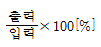
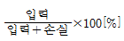
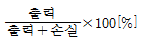
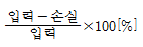
(정답률: 18%)
56. 비례추이를 하는 전동기는?
- 단상 유도전동기
- 권선형 유도전동기
- 동기 전동기
- 정류자 전동기
(정답률: 16%)
57. 유도기전력의 크기가 서로 같은 A, B 2대의 동기발전기를 병렬 운전할 때, A발전기의 유기기전력 위상이 B보다 앞설 때 발생하는 현상이 아닌 것은?
- 동기화 전류가 흐른다.
- 동기화력이 발생한다.
- B가 A에 전력을 공급한다.
- A의 회전속도가 감소한다.
(정답률: 12%)
58. 차동 복권 발전기를 분권기로 하려면 어떻게 하여야 하는가?
- 분권계자를 단락시킨다.
- 직권계자를 단락시킨다.
- 분권계자를 단선시킨다.
- 직권계자를 단선시킨다.
(정답률: 16%)
59. 다음 설명 중 잘못된 것은?
- 자동차용 전동기는 직권전동기를 쓴다.
- 승용 엘리베이터는 워드-레오나드 방식이 사용된다.
- 기중기용 전동기는 직류분권 전동기를 쓴다.
- 크레인, 엘리베이터 등은 가동복권전동기를 쓴다.
(정답률: 10%)
60. 동기 발전기에서 유기기전력과 전기자 전류가 동상인 경우의 전기자반작용은?
- 감자작용
- 중자작용
- 교차 자화작용
- 직축 반작용
(정답률: 16%)
4과목: 회로이론 및 제어공학
61. 어느 시퀀스 제어시스템의 내부 상태가 9가지로 바뀐다면 이를 설계할 때 필요한 플립플롭의 최소 개수는?
- 3
- 4
- 5
- 9
(정답률: 13%)
62.
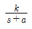
인 전달함수를 신호 흐름선도로 표시하면?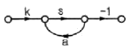
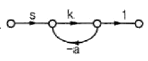
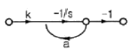
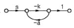
(정답률: 13%)
63. 다음 중 Z 변환함수
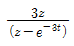
에 대응되는 라플라스 변환함수는?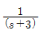
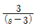
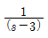
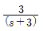
(정답률: 16%)
64. 다음 중 Routh 안정도 판별법에서 그림과 같은 제어계가 안정되기 위한 K의 값으로 적합한 것은?
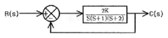
- 1
- 3
- 5
- 7
(정답률: 13%)
65. 다음 특성 방정식 중에서 안정된 시스템인 것은?
- s4+3s3-s2+s+10=0
- 2s3+3s2+4s+5=0
- s4-2s3-3s2+4s+5=0
- s5+s3+2s2+4s+3=0
(정답률: 19%)
66. 다음 중 논리식
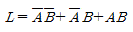
을 간단히 하면?- A+B
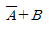
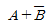
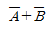
(정답률: 10%)
67.
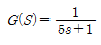
일 때, 보드 선도에서 절점 주파수 w0는?- 0.2[rad/sec]
- 0.5[rad/sec]
- 2[rad/sec]
- 5[rad/sec]
(정답률: 15%)
68.
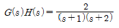
의 이득여유는?- 20[dB]
- -20[dB]
- 0[dB]
- ∞[dB]
(정답률: 13%)
69. 어떤 제어시스템이
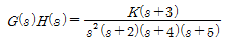
일 때, 근궤적의 수 는?- 1
- 3
- 5
- 7
(정답률: 14%)
70.
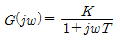
일 때 |G(jw)|와 ∠G(jw)는?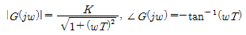
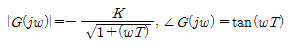
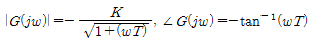
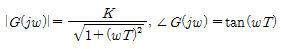
(정답률: 15%)
71. 분포정수회로에서 저항 0.5[Ω/km], 인덕턴스가 1[μH/km], 정전용량 6[㎌/km], 길이 10[km]인 송전선로에서 무왜형 선로가 되기 위한 컨덕턴스는?
- 1[℧/km]
- 2[℧/km]
- 3[℧/km]
- 4[℧/km]
(정답률: 15%)
72. 다음의 회로 단자 a, b에 나타나는 전압은?
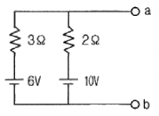
- 3.6[V]
- 8.4[V]
- 10[V]
- 16[V]
(정답률: 15%)
73. R-L 직렬 회로에서 L=30[mH], R=10[Ω] 일 때 이 회로의 시정수는?
- 3[ms]
- 3X10-1[ms]
- 3X10-2[ms]
- 3X10-3[ms]
(정답률: 8%)
74. 대칭 3상 Y결선 부하에서 각 상의 임피던스가 16+j12[Ω]이고 부하전류가 10[A]일 때 이 부하의 선간 전압은?
- 235.4[V]
- 346.4[V]
- 456.7[V]
- 524.4[V]
(정답률: 17%)
75. 다음과 같은 회로가 정저항 회로가 되기 위한 저항 R의 값은?
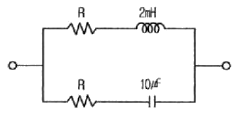
- 8.2[Ω]
- 14.1[Ω]
- 20[Ω]
- 28[Ω]
(정답률: 16%)
76. 어떤 회로에 E=100+j20[V]인 전압을 가했을 때 I=4+j3[A]인 전류가 흘렀다면 이 회로의 임피던스는?
- 19.5+j3.9[Ω]
- 18.4-j8.8[Ω]
- 17.3-j8.5[Ω]
- 15.3+j3.7[Ω]
(정답률: 18%)
77. 기본파의 전압이 100[V], 제3고조파 전압이 40[V], 제5고조파 전압이 30[V]일 때 이 전압파의 왜형률은?
- 10[%]
- 20[%]
- 30[%]
- 50[%]
(정답률: 16%)
78. 최대값이 Em인 정현파의 파형률은?
- 1
- 1.11
- 1.41
- 2
(정답률: 12%)
79. 1-coswt를 라플라스 변환하면?
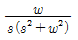
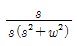
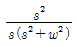
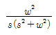
(정답률: 12%)
80. R=10[kΩ], L=10[mH], C=1[uF]인 직렬회로에 크기가 100[V]인 교류 전압을 인가할 때 흐르는 최대 전류는? (단, 교류전압의 주파수는 0에서 무한대까지 변화한다.)
- 0.1[mA]
- 1[mA]
- 5[mA]
- 10[mA]
(정답률: 10%)
5과목: 전기설비기술기준 및 판단기준
81. 지중 또는 수중에 시설되는 금속체의 부식 방지를 위한 전기부식방지회로의 사용전압은 직류 몇 [V] 이하로 하여야 하는가?
- 24[V]
- 48[V]
- 60[V]
- 100[V]
(정답률: 16%)
82. 가요전선관공사에 의한 저압 옥내배선의 방법으로 틀린 것은?
- 가요전선관 안에는 전선의 접속점이 없어야 한다.
- 1종 금속제 가요전선과의 두께는 0.6mm 이상이어야 한다.
- 전선은 연선이어야 하나, 단면적 10mm2 이하는 단선을 사용하여도 된다.
- 저압 옥내배선의 사용전압이 400V 미만인 경우 제3종 접지공사를 한다.
(정답률: 16%)
83. 변압기의 고압측 1선 지락전류가 60A라 할 때 제2종 접지 저항값은 최대 몇 Ω 인가? (단, 2초 이내에는 자동적으로 고압전로를 차단하는 장치가 없다고 한다.)
- 2.5Ω
- 5Ω
- 7.5Ω
- 10Ω
(정답률: 11%)
84. 저압 옥내 배선을 합성수지관 공사에 의하여 실시하는 경우 사용할 수 있는 전선의 단면적은 최대 몇 mm2인가?
- 2.5mm2
- 4mm2
- 6mm2
- 10mm2
(정답률: 11%)
85. 고압 또는 특고압 전로 중 기계기구 및 전선을 보호하기 위하여 필요한 곳에 시설하여야 하는 것은?
- 콘덴서형 변성기
- 동기조상기
- 과전류차단기
- 영상변류기
(정답률: 18%)
86. 고압 가공전선에 케이블을 사용하는 경우의 조가용선 및 케이블의 피복에 사용하는 금속체에는 몇 종 접지공사를 하여야 하는가?
- 제1종 접지공사
- 제2종 접지공사
- 제3종 접지공사
- 특별 제3종 접지공사
(정답률: 16%)
87. 가로등 경기장, 공장, 아파트 단지 등의 일반 조명을 위하여 시설하는 고압방전등은 그 효율이 몇 [lm/W]이상의 것이어야 하는가?
- 30[lm/W]
- 50[lm/W]
- 70[lm/W]
- 100[lm/W]
(정답률: 21%)
88. 저고압, 가공전선이 철도를 횡단하는 경우 레일면상 높이는 몇 [m] 이상이어야 하는가?
- 4[m]
- 5[m]
- 5.5[m]
- 6.5[m]
(정답률: 19%)
89. 고압 가공 전선로와 기설 가공 약전류 전선로가 병행되는 경우에는 유도작용에 의하여 통신상의 장해가 발생하지 않도록 전선과 기설 가공 약전류 전선간의 이격 거리는 최소 몇 m 이상이어야 하는가?
- 0.5m
- 1m
- 1.5m
- 2m
(정답률: 12%)
90. 가공전선로의 지지물에 시설하는 지선으로 연선을 사용할 경우에는 소선이 최소 몇 가닥 이상이어야 하는가?
- 3가닥
- 4가닥
- 5가닥
- 6가닥
(정답률: 18%)
91. 사용전압 480V인 옥내 저압 절연전선을 애자사용공사에 의해서 점검할 수 있는 은폐장소에 시설하는 경우 전선 상호간의 간격은 몇 cm 이상이어야 하는가?
- 6cm
- 10cm
- 12cm
- 15cm
(정답률: 14%)
92. 전력 보안 가공통신선의 설치 높이를 규정한 것 중 틀린 것은?
- 도로위에 시설하는 경우는 지표상 4.5m 이상
- 철도를 횡단하는 경우는 궤도면상 6.5m 이상
- 횡단보도교 위에 시설하는 경우는 노면상 3m 이상
- 위 세가지 이외의 경우는 지표상 3.5m 이상
(정답률: 12%)
93. 지중선이 지중약전류 전선 등과 접근하거나 교차하는 경우에 상호 간의 이격거리가 저압 또는 고압의 지중전선이 몇 [cm] 이하인 때에는 지중 전선과 지중약 전류전선 등 사이에 견고한 내화성의 격벽(隔壁)을 설치하여야 하는가?
- 10[cm]
- 20[cm]
- 30[cm]
- 60[cm]
(정답률: 10%)
94. 용량이 몇 kVA 이상인 조상가에는 그 내부에 고장이 생긴 경우에 자동적으로 이를 전로로부터 차단하는 장치를 하여야 하는가?
- 1000kVA
- 5000kVA
- 10000kVA
- 15000kVA
(정답률: 15%)
95. 저압 또는 고압 가공전선이 도로에 접근상태로 시설되는 경우 잘못된 것은?
- 저압 가공전선이 도로에 접근하는 경우는 2[m] 이상을 이격하여야 한다.
- 저압 가공전선이 도로와의 수평 이격거리가 1[m] 이상인 경우는 예외 조항을 적용할 수 있다.
- 고압 가공전선로는 고압 보안공사에 기준하여 시설한다.
- 고압 가공전선은 저압 전차선로의 지지물과 60[cm]를 이격하여야 한다.
(정답률: 8%)
96. 연료전지 및 태양전지 모듈의 절연내력은 최대 사용 전압의 ( ① )배의 직류전압 또는 1배의 교류전압을 충전부분과 대지사이에 연속하여 ( ② )분간 가하여 절연 내력을 시험하였을 때에 이에 견디는 것이어야 한다. ( ① ),( ② )안에 알맞은 것은?
- ① 1.2 ② 5
- ① 1.2 ② 10
- ① 1.5 ② 5
- ① 1.5 ② 10
(정답률: 16%)
97. 고압 가공 전선의 안전율이 경동선의 경우, 얼마 이상의 이도(弛度)로 시설하여야 하는가?
- 2.0
- 2.2
- 2.5
- 3.0
(정답률: 15%)
98. 교류식 전기철도는 그 단상부하에 의한 전압불평형의 허용한도가 그 변전소의 수전점에서 몇 % 이하이어야 하는가?
- 1%
- 2%
- 3%
- 4%
(정답률: 15%)
99. 옥내에 시설하는 전동기에는 전동기가 소손될 우려가 있는 과전류가 생겼을 때 자동적으로 이를 저지하거나 이를 경보하는 장치를 하여야 하는데, 단상 전동기인 경우 전원측 전로에 시설하는 과전류차단기의 정격 전류가 몇 [A] 이하이면 이 과부하 보호 장치를 시설하지 않아도 되는가? (단, 단상 전동기는 KS C 4204(2008)의 표준정격의 것을 말한다.)
- 10A
- 15A
- 30A
- 50A
(정답률: 14%)
100. 사용전압이 22.9kV인 특고압 가공전선이 도로를 횡단하는 경우 지표상의 높이는 몇 m 이상이어야 하는가?
- 4.5m
- 5m
- 5.5m
- 6m
(정답률: 15%)